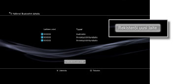

Asetukset > Lisälaiteasetukset > Hallinnoi Bluetooth®-laitteita
Hallinnoi Bluetooth®-laitteita
Voit rekisteröidä PS3™-järjestelmään Bluetooth®-yhteensopivan laitteen tai muodostaa niiden välille pariliitoksen. Voit myös hallinnoida Bluetooth®-laitteita, jotka muodostavat yhteyden järjestelmään.
Bluetooth®-yhteensopivan laitteen rekisteröiminen
1. |
Valmistele Bluetooth®-yhteensopiva laite ja tunnistekoodi. |
|---|---|
2. |
Valitse |
3. |
Valitse [Hallinnoi Bluetooth®-laitteita]. |
4. |
Valitse [Rekisteröi uusi laite].  |
5. |
Valitse [Aloita laitehaku]. |
6. |
Valitse laite, jonka haluat rekisteröidä PS3™-järjestelmään tai johon haluat muodostaa pariliitoksen. |
 (Asetukset) >
(Asetukset) >  (Lisälaiteasetukset).
(Lisälaiteasetukset).Vihjeitä
- Jos käytössä on enimmäismäärä langattomia ohjaimia, poista käyttämättömät laitteet rekisteröityjen laitteiden luettelosta, jotta saat tilaa uudelle Bluetooth®-laitteelle.
- Lisätietoja Bluetooth®-yhteensopivasta laitteesta on sen mukana toimitetuissa ohjeissa.
Bluetooth®-laitteiden hallinnoiminen
Tarkista PS3™-järjestelmääsi kytkettyjen Bluetooth®-yhteensopivien laitteiden tiedot tai kytke ja irrota laitteita. Valitse hallinnoitava laite, paina  -näppäintä ja valitse sitten asetusvalikon asetukset.
-näppäintä ja valitse sitten asetusvalikon asetukset.